library(harp)
library(here)
library(dplyr)
library(forcats)Point Verifcation Workflow
Workflow Steps
When doing a point verification there are a number of steps to the workflow. Some of these steps you have to do every time, and others might depend on the forecast parameter being verified, the scores you want to compute, or any conditions that you want to apply to the verification. The compulsory steps can be described as:
- Read forecast
- Read observations
- Join
- Verify
- (Save / Plot)
In this tutorial we will go through each of these steps in turn and then introduce some optional steps, increasing the complexity as we go. It is assumed that SQLite files for both forecasts and observations have been prepared.
Basic deterministic verification
Here we will demonstrate the workflow for a simple deterministic verification of 2m temperature. The forecasts come from the AROME-Arctic model that is run operationally by MET Norway, and we will do the verification for August 2023.
Read forecast
As always, the first thing we need to do is to attach the packages that we are going to need. There may be some unfamiliar packages here, but they will be explained as we begin to use functions from them.
All of our forecasts and observations use the same root directories so we’ll set them here
fcst_dir <- here("data", "FCTABLE")
obs_dir <- here("data", "OBSTABLE")Forecasts are read in with read_point_forecast(). We will read in the 00:00 UTC forecasts for lead times 0 - 24 hours every 3 hours.
fcst <- read_point_forecast(
dttm = seq_dttm(2023080100, 2023083100, "24h"),
fcst_model = "arome_arctic",
fcst_type = "det",
parameter = "T2m",
file_path = fcst_dir
)Read observations
Observations are read in with read_point_obs(). Observations files often contain more times and locations than we have for the forecasts. Therefore, we can tell the the function which times and locations to read with the help of unique_valid_dttm() and unique_station().
obs <- read_point_obs(
dttm = unique_valid_dttm(fcst),
parameter = "T2m",
stations = unique_stations(fcst),
obs_path = obs_dir
)Join
Now that we have the forecasts and observations, we need to match the forecasts and observations to the same date-times and locations. We do this by joining the forecast and observations to each other using join_to_fcst(). Basically this is doing an inner join between the forecast and observations data frames with an extra check to make sure the forecast and observations data have the same units.
fcst <- join_to_fcst(fcst, obs)Verify
We are now ready to verify. For deterministic forecasts this is done with det_verify(). By default the verification is stratified by lead time. All we need to tell the function is which column contains the observations. In this case, that would be “T2m”.
det_verify(fcst, T2m)::det_summary_scores:: # A tibble: 9 × 9
fcst_model lead_time num_cases num_stations bias rmse mae stde hexbin
<chr> <int> <int> <int> <dbl> <dbl> <dbl> <dbl> <list>
1 arome_arc… 0 5611 191 0.501 1.50 1.06 1.42 <tibble>
2 arome_arc… 3 5669 192 0.427 1.50 1.05 1.44 <tibble>
3 arome_arc… 6 5703 194 -0.0388 1.16 0.848 1.16 <tibble>
4 arome_arc… 9 5723 193 -0.222 1.38 1.05 1.36 <tibble>
5 arome_arc… 12 5715 194 -0.268 1.47 1.11 1.44 <tibble>
6 arome_arc… 15 5745 193 -0.265 1.42 1.06 1.40 <tibble>
7 arome_arc… 18 5664 194 0.135 1.28 0.934 1.27 <tibble>
8 arome_arc… 21 5692 192 0.572 1.75 1.24 1.66 <tibble>
9 arome_arc… 24 5615 191 0.695 2.00 1.41 1.88 <tibble>
--harp verification for T2m--
# for forecasts from 00:00 UTC 01 aug. 2023 to 00:00 UTC 31 aug. 2023
# using 194 observation stations
# for verification groups:
-> lead_timeWe can also compute categorical scores by adding some thresholds. This will compute scores for >= threshold categories.
det_verify(fcst, T2m, thresholds = seq(280, 290, 2.5))::det_summary_scores:: # A tibble: 9 × 9
fcst_model lead_time num_cases num_stations bias rmse mae stde hexbin
<chr> <int> <int> <int> <dbl> <dbl> <dbl> <dbl> <list>
1 arome_arc… 0 5611 191 0.501 1.50 1.06 1.42 <tibble>
2 arome_arc… 3 5669 192 0.427 1.50 1.05 1.44 <tibble>
3 arome_arc… 6 5703 194 -0.0388 1.16 0.848 1.16 <tibble>
4 arome_arc… 9 5723 193 -0.222 1.38 1.05 1.36 <tibble>
5 arome_arc… 12 5715 194 -0.268 1.47 1.11 1.44 <tibble>
6 arome_arc… 15 5745 193 -0.265 1.42 1.06 1.40 <tibble>
7 arome_arc… 18 5664 194 0.135 1.28 0.934 1.27 <tibble>
8 arome_arc… 21 5692 192 0.572 1.75 1.24 1.66 <tibble>
9 arome_arc… 24 5615 191 0.695 2.00 1.41 1.88 <tibble>
::det_threshold_scores:: # A tibble: 45 × 41
fcst_model lead_time threshold num_stations num_cases_for_threshold_total
<chr> <int> <dbl> <int> <int>
1 arome_arctic 0 280 191 5335
2 arome_arctic 0 282. 191 4646
3 arome_arctic 0 285 191 3216
4 arome_arctic 0 288. 191 1667
5 arome_arctic 0 290 191 561
6 arome_arctic 3 280 192 5314
7 arome_arctic 3 282. 192 4549
8 arome_arctic 3 285 192 3125
9 arome_arctic 3 288. 192 1565
10 arome_arctic 3 290 192 494
# ℹ 35 more rows
# ℹ 36 more variables: num_cases_for_threshold_observed <dbl>,
# num_cases_for_threshold_forecast <dbl>, cont_tab <list>,
# threat_score <dbl>, hit_rate <dbl>, miss_rate <dbl>,
# false_alarm_rate <dbl>, false_alarm_ratio <dbl>, heidke_skill_score <dbl>,
# pierce_skill_score <dbl>, kuiper_skill_score <dbl>, percent_correct <dbl>,
# frequency_bias <dbl>, equitable_threat_score <dbl>, odds_ratio <dbl>, …
--harp verification for T2m--
# for forecasts from 00:00 UTC 01 aug. 2023 to 00:00 UTC 31 aug. 2023
# using 194 observation stations
# for verification groups:
-> lead_time & thresholdSave / Plot
Once the verification is done we can save the data using save_point_verif() and plot the data using plot_point_verif(). For plotting we give the function the verification data and the score we want to plot. The scores are basically column names in any of the verification data’s data frames.
First we need to write the verification to a variable, and then save.
verif <- det_verify(fcst, T2m, thresholds = seq(280, 290, 2.5))
save_point_verif(verif, verif_path = here("data", "verification", "det"))We can now plot some scores
plot_point_verif(verif, bias)
plot_point_verif(verif, rmse)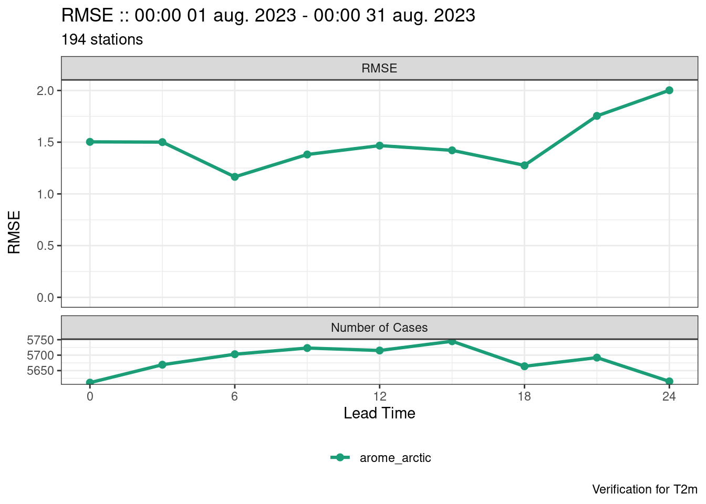
plot_point_verif(verif, frequency_bias)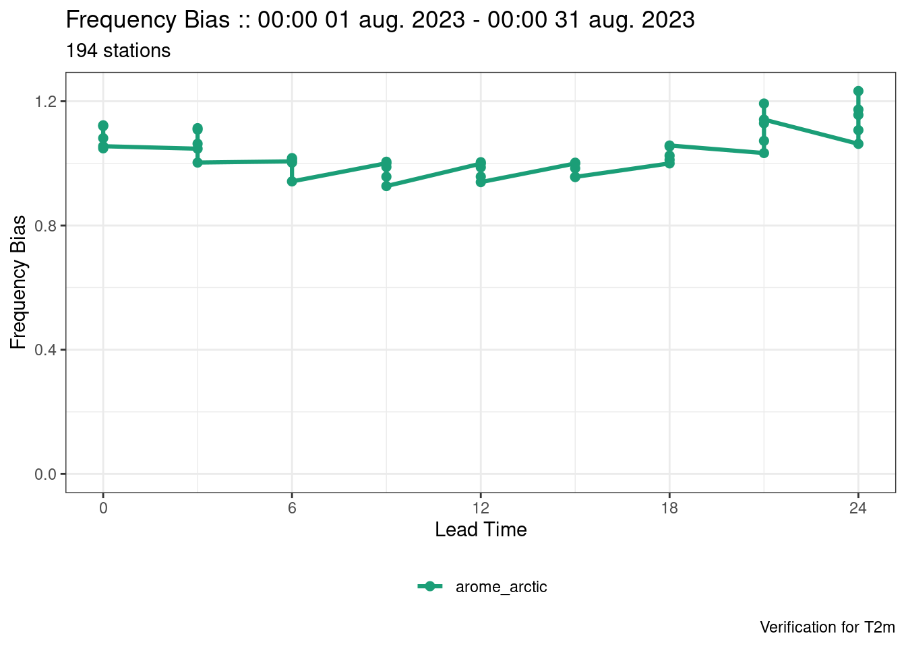
The last plot looks strange. That’s because the scores exist for each threshold and they are not being separated. We can separate them by mapping the colour to each threshold, by faceting by threshold (faceting means to separate into panels), or by filtering to a single threshold.
plot_point_verif(verif, frequency_bias, colour_by = threshold)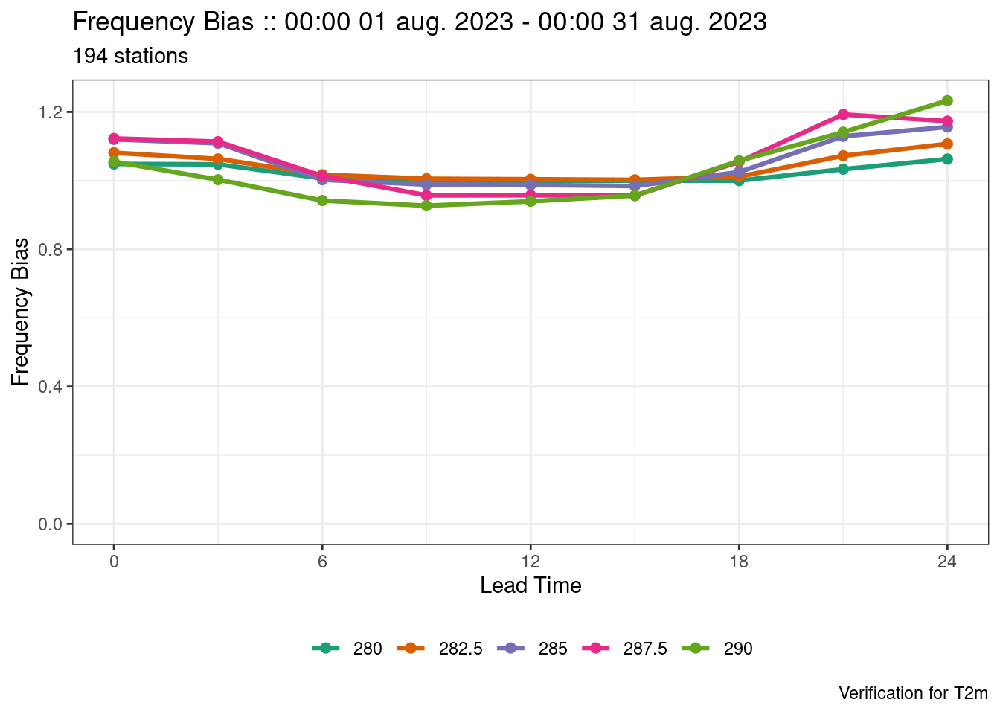
plot_point_verif(verif, frequency_bias, facet_by = vars(threshold))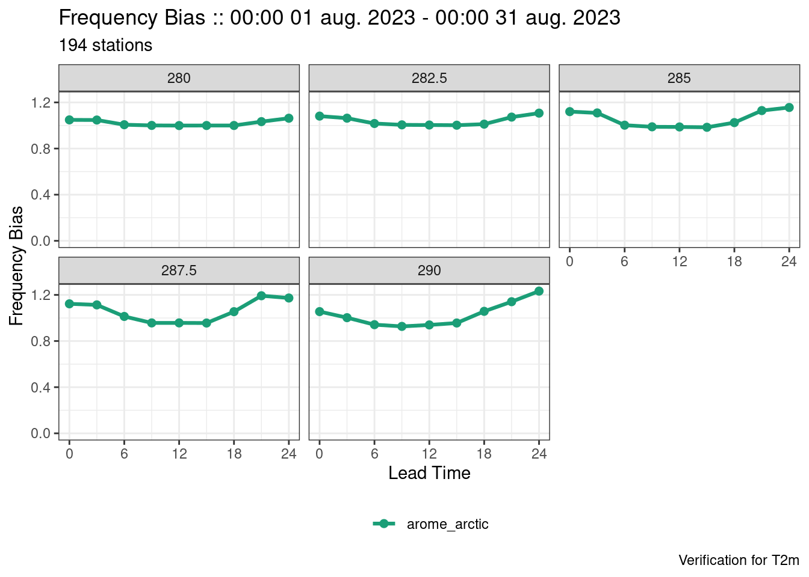
plot_point_verif(verif, frequency_bias, filter_by = vars(threshold == 285))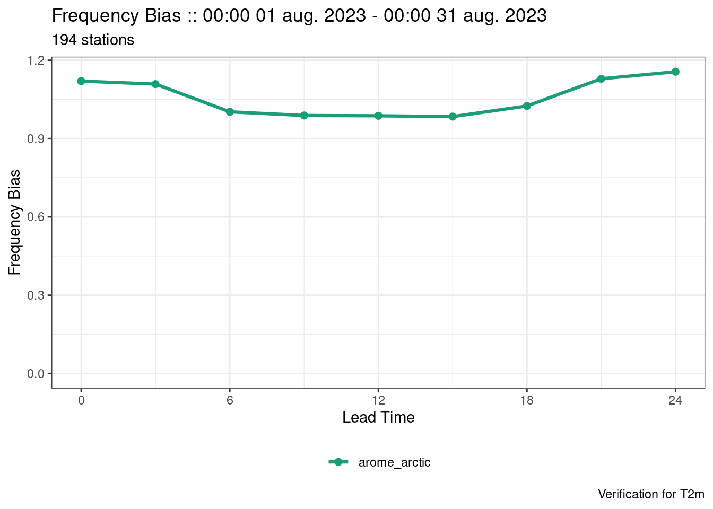
Note:
facet_by and filter_by values must be wrapped in vars()
This is because faceting and filtering can be done by more than one variable and the vars() function facilitates that.
For hexbin plots, the plots are automatically faceted by the grouping variable of the verification - in this case lead time.
plot_point_verif(verif, hexbin)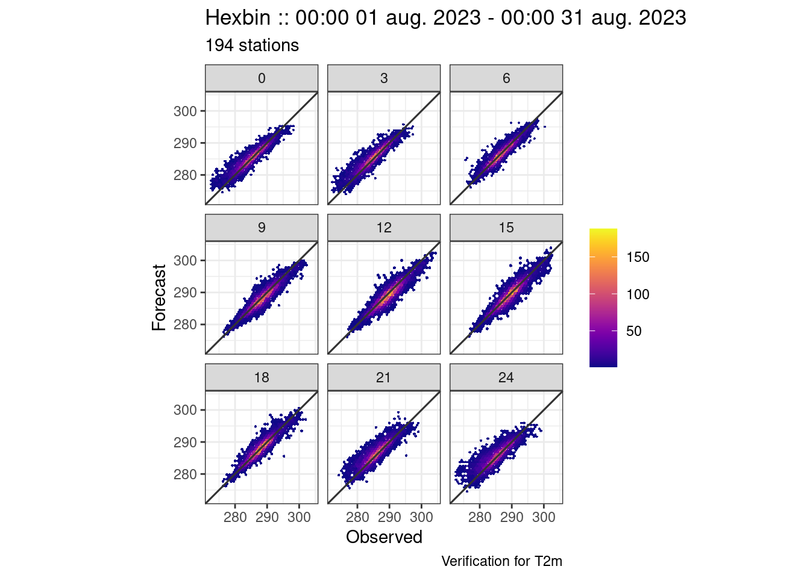
Basic ensemble verification
The workflow for verifying ensemble forecasts is much the same as that for deterministic verification. The only real difference is using the ens_verify() function to compute the score. In this example we will use data from the MEPS model for the same time period as before.
fcst <- read_point_forecast(
dttm = seq_dttm(2023080100, 2023083100, "1d"),
fcst_model = "meps",
fcst_type = "eps",
parameter = "T2m",
file_path = fcst_dir
)
obs <- read_point_obs(
dttm = unique_valid_dttm(fcst),
parameter = "T2m",
stations = unique_stations(fcst),
obs_path = obs_dir
)
fcst <- join_to_fcst(fcst, obs)verif <- ens_verify(fcst, T2m, thresholds = seq(280, 290, 2.5))
verif::ens_summary_scores:: # A tibble: 9 × 16
fcst_model lead_time num_cases num_stations mean_bias stde rmse spread
<chr> <int> <int> <int> <dbl> <dbl> <dbl> <dbl>
1 meps 0 5830 192 0.219 1.40 1.41 0.952
2 meps 3 5884 193 0.227 1.49 1.51 0.942
3 meps 6 5920 195 0.127 1.20 1.21 0.770
4 meps 9 5940 194 0.0789 1.27 1.27 0.942
5 meps 12 5933 195 0.00602 1.32 1.32 1.01
6 meps 15 5966 194 -0.0223 1.27 1.27 0.989
7 meps 18 5884 195 0.292 1.22 1.26 0.782
8 meps 21 5909 193 0.511 1.61 1.69 0.812
9 meps 24 5832 192 0.593 1.82 1.92 0.878
# ℹ 8 more variables: dropped_members_spread <dbl>, spread_skill_ratio <dbl>,
# dropped_members_spread_skill_ratio <dbl>, hexbin <list>,
# rank_histogram <list>, crps <dbl>, crps_potential <dbl>,
# crps_reliability <dbl>
::ens_threshold_scores:: # A tibble: 45 × 19
fcst_model lead_time threshold fair_brier_score sample_climatology
<chr> <int> <dbl> <dbl> <dbl>
1 meps 0 280 0.0457 0.892
2 meps 3 280 0.0578 0.878
3 meps 6 280 0.0132 0.975
4 meps 9 280 0.00352 0.991
5 meps 12 280 0.00304 0.994
6 meps 15 280 0.00362 0.993
7 meps 18 280 0.00339 0.990
8 meps 21 280 0.0451 0.941
9 meps 24 280 0.0719 0.891
10 meps 0 282. 0.0753 0.732
# ℹ 35 more rows
# ℹ 14 more variables: bss_ref_climatology <dbl>, num_stations <int>,
# num_cases_total <int>, num_cases_observed <int>, num_cases_forecast <int>,
# brier_score <dbl>, brier_skill_score <dbl>, brier_score_reliability <dbl>,
# brier_score_resolution <dbl>, brier_score_uncertainty <dbl>,
# reliability <list>, roc <list>, roc_area <dbl>, economic_value <list>
::det_summary_scores:: # A tibble: 54 × 11
fcst_model sub_model member lead_time num_cases num_stations bias rmse
<chr> <chr> <chr> <int> <int> <int> <dbl> <dbl>
1 meps meps mbr000 0 5830 192 0.244 1.29
2 meps meps mbr000 3 5884 193 0.231 1.44
3 meps meps mbr000 6 5920 195 0.147 1.21
4 meps meps mbr000 9 5940 194 0.108 1.32
5 meps meps mbr000 12 5933 195 0.0298 1.39
6 meps meps mbr000 15 5966 194 -0.0109 1.35
7 meps meps mbr000 18 5884 195 0.331 1.33
8 meps meps mbr000 21 5909 193 0.557 1.76
9 meps meps mbr000 24 5832 192 0.634 1.99
10 meps meps mbr001 0 5830 192 0.0680 1.60
# ℹ 44 more rows
# ℹ 3 more variables: mae <dbl>, stde <dbl>, hexbin <list>
--harp verification for T2m--
# for forecasts from 00:00 UTC 01 aug. 2023 to 00:00 UTC 31 aug. 2023
# using 195 observation stations
# for verification groups:
-> lead_timesave_point_verif(verif, here("data", "verification", "ens"))Since this is ensemble data, ensemble specific scores have been computed as well as deterministic summary scores for each member. There are a couple of scores that plot_point_verif() can derive that are not columns in the data frames - these are spread_skill and brier_score_decomposition.
plot_point_verif(verif, spread_skill)
plot_point_verif(verif, crps)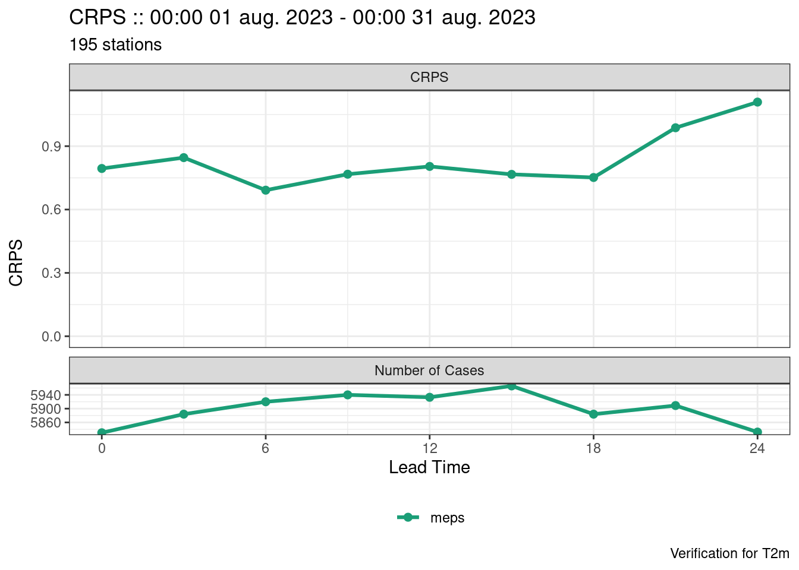
plot_point_verif(verif, brier_score, facet_by = vars(threshold))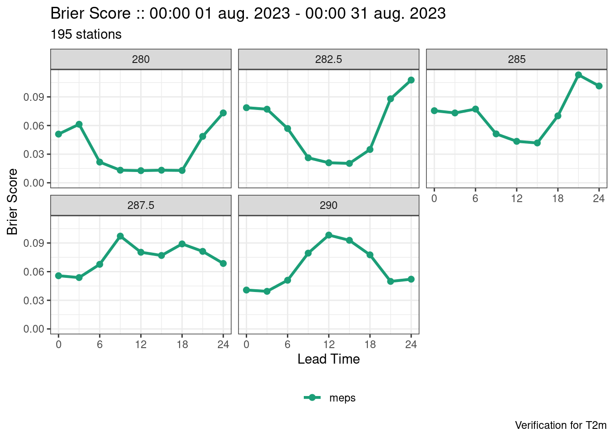
plot_point_verif(verif, brier_score_decomposition, facet_by = vars(threshold))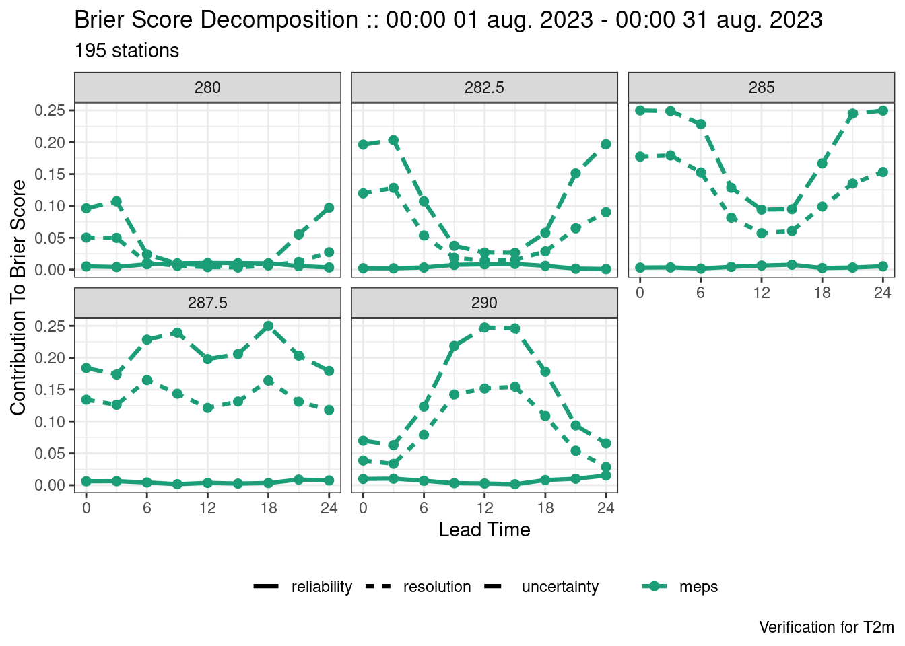
plot_point_verif(verif, reliability, facet_by = vars(threshold))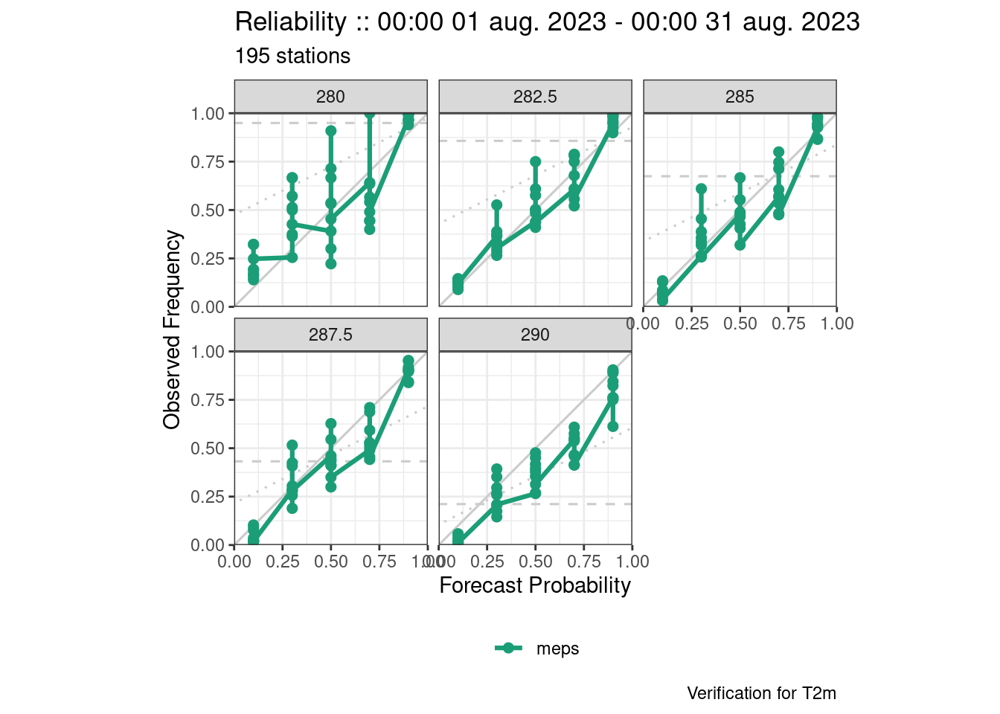
Again the last one has issues with overplotting. This is because there should be one plot for each threshold and each grouping variable (in this case lead_time), so we need to filter.
plot_point_verif(
verif,
reliability,
facet_by = vars(threshold),
filter_by = vars(lead_time == 12)
)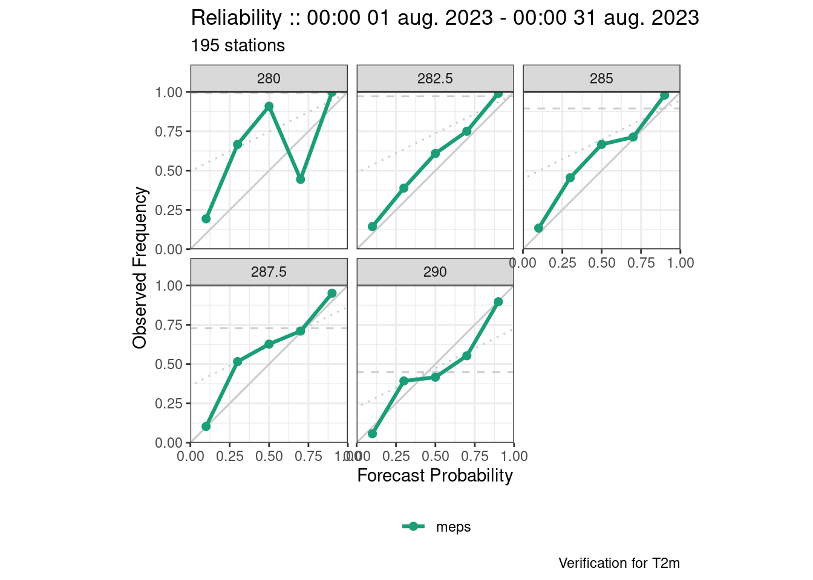
Comparing forecast models
Verification scores are often useful for comparing the performance of different models, or model developments. With harp it is straightforward to compare different models - it is simply case of reading multiple forecasts in in one go. Here we are going to do a deterministic comparison of the AROME-Arctic model and member 0 of the MEPS and IFSENS ensembles. We need to read the ensemble and deterministic forecasts in separately due to the different fcst_type argument. When there are multiple forecast models, we get a harp_list, which works in the same way as a standard list in R. This means that when we read for the second time we can put the output in a named element of the harp_list
fcst <- read_point_forecast(
dttm = seq_dttm(2023080100, 2023083100, "1d"),
fcst_model = c("meps", "ifsens"),
fcst_type = "eps",
parameter = "T2m",
members = 0,
file_path = fcst_dir
) |>
as_det()
fcst$arome_arctic <- read_point_forecast(
dttm = seq_dttm(2023080100, 2023083100, "1d"),
fcst_model = "arome_arctic",
fcst_type = "det",
parameter = "T2m",
file_path = fcst_dir
)
fcst• meps
::deterministic point forecast:: # A tibble: 67,239 × 10
fcst_model fcst_dttm valid_dttm lead_time SID parameter
* <chr> <dttm> <dttm> <int> <int> <chr>
1 meps 2023-08-01 00:00:00 2023-08-01 00:00:00 0 1001 T2m
2 meps 2023-08-01 00:00:00 2023-08-01 00:00:00 0 1010 T2m
3 meps 2023-08-01 00:00:00 2023-08-01 00:00:00 0 1014 T2m
4 meps 2023-08-01 00:00:00 2023-08-01 00:00:00 0 1015 T2m
5 meps 2023-08-01 00:00:00 2023-08-01 00:00:00 0 1018 T2m
6 meps 2023-08-01 00:00:00 2023-08-01 00:00:00 0 1023 T2m
7 meps 2023-08-01 00:00:00 2023-08-01 00:00:00 0 1025 T2m
8 meps 2023-08-01 00:00:00 2023-08-01 00:00:00 0 1026 T2m
9 meps 2023-08-01 00:00:00 2023-08-01 00:00:00 0 1027 T2m
10 meps 2023-08-01 00:00:00 2023-08-01 00:00:00 0 1028 T2m
# ℹ 67,229 more rows
# ℹ 4 more variables: fcst_cycle <chr>, model_elevation <dbl>, units <chr>,
# fcst <dbl>
• ifsens
::deterministic point forecast:: # A tibble: 37,355 × 10
fcst_model fcst_dttm valid_dttm lead_time SID parameter
* <chr> <dttm> <dttm> <int> <int> <chr>
1 ifsens 2023-08-01 00:00:00 2023-08-01 00:00:00 0 1001 T2m
2 ifsens 2023-08-01 00:00:00 2023-08-01 00:00:00 0 1010 T2m
3 ifsens 2023-08-01 00:00:00 2023-08-01 00:00:00 0 1014 T2m
4 ifsens 2023-08-01 00:00:00 2023-08-01 00:00:00 0 1015 T2m
5 ifsens 2023-08-01 00:00:00 2023-08-01 00:00:00 0 1018 T2m
6 ifsens 2023-08-01 00:00:00 2023-08-01 00:00:00 0 1023 T2m
7 ifsens 2023-08-01 00:00:00 2023-08-01 00:00:00 0 1025 T2m
8 ifsens 2023-08-01 00:00:00 2023-08-01 00:00:00 0 1026 T2m
9 ifsens 2023-08-01 00:00:00 2023-08-01 00:00:00 0 1027 T2m
10 ifsens 2023-08-01 00:00:00 2023-08-01 00:00:00 0 1028 T2m
# ℹ 37,345 more rows
# ℹ 4 more variables: fcst_cycle <chr>, model_elevation <dbl>, units <chr>,
# fcst <dbl>
• arome_arctic
::deterministic point forecast:: # A tibble: 64,800 × 11
fcst_model fcst_dttm valid_dttm lead_time SID parameter
<chr> <dttm> <dttm> <int> <int> <chr>
1 arome_arct… 2023-08-01 00:00:00 2023-08-01 00:00:00 0 1001 T2m
2 arome_arct… 2023-08-01 00:00:00 2023-08-01 00:00:00 0 1010 T2m
3 arome_arct… 2023-08-01 00:00:00 2023-08-01 00:00:00 0 1014 T2m
4 arome_arct… 2023-08-01 00:00:00 2023-08-01 00:00:00 0 1015 T2m
5 arome_arct… 2023-08-01 00:00:00 2023-08-01 00:00:00 0 1018 T2m
6 arome_arct… 2023-08-01 00:00:00 2023-08-01 00:00:00 0 1023 T2m
7 arome_arct… 2023-08-01 00:00:00 2023-08-01 00:00:00 0 1025 T2m
8 arome_arct… 2023-08-01 00:00:00 2023-08-01 00:00:00 0 1026 T2m
9 arome_arct… 2023-08-01 00:00:00 2023-08-01 00:00:00 0 1027 T2m
10 arome_arct… 2023-08-01 00:00:00 2023-08-01 00:00:00 0 1028 T2m
# ℹ 64,790 more rows
# ℹ 5 more variables: z <dbl>, fcst <dbl>, fcst_cycle <chr>,
# model_elevation <dbl>, units <chr>When we have multiple forecast models we should ensure that we are comparing like with like. We therefore only want to verify the cases that are common to all of the forecast models. We can select these cases using common_cases(). Note the number of rows in each of the data frames before selecting the common cases above and after selecting the common cases below.
fcst <- common_cases(fcst)
fcst• meps
::deterministic point forecast:: # A tibble: 36,000 × 11
fcst_model fcst_dttm valid_dttm lead_time SID parameter
<chr> <dttm> <dttm> <int> <int> <chr>
1 meps 2023-08-01 00:00:00 2023-08-01 00:00:00 0 1001 T2m
2 meps 2023-08-01 00:00:00 2023-08-01 00:00:00 0 1010 T2m
3 meps 2023-08-01 00:00:00 2023-08-01 00:00:00 0 1014 T2m
4 meps 2023-08-01 00:00:00 2023-08-01 00:00:00 0 1015 T2m
5 meps 2023-08-01 00:00:00 2023-08-01 00:00:00 0 1018 T2m
6 meps 2023-08-01 00:00:00 2023-08-01 00:00:00 0 1023 T2m
7 meps 2023-08-01 00:00:00 2023-08-01 00:00:00 0 1025 T2m
8 meps 2023-08-01 00:00:00 2023-08-01 00:00:00 0 1026 T2m
9 meps 2023-08-01 00:00:00 2023-08-01 00:00:00 0 1027 T2m
10 meps 2023-08-01 00:00:00 2023-08-01 00:00:00 0 1028 T2m
# ℹ 35,990 more rows
# ℹ 5 more variables: fcst_cycle <chr>, model_elevation <dbl>, units <chr>,
# fcst <dbl>, z <dbl>
• ifsens
::deterministic point forecast:: # A tibble: 36,000 × 11
fcst_model fcst_dttm valid_dttm lead_time SID parameter
<chr> <dttm> <dttm> <int> <int> <chr>
1 ifsens 2023-08-01 00:00:00 2023-08-01 00:00:00 0 1001 T2m
2 ifsens 2023-08-01 00:00:00 2023-08-01 00:00:00 0 1010 T2m
3 ifsens 2023-08-01 00:00:00 2023-08-01 00:00:00 0 1014 T2m
4 ifsens 2023-08-01 00:00:00 2023-08-01 00:00:00 0 1015 T2m
5 ifsens 2023-08-01 00:00:00 2023-08-01 00:00:00 0 1018 T2m
6 ifsens 2023-08-01 00:00:00 2023-08-01 00:00:00 0 1023 T2m
7 ifsens 2023-08-01 00:00:00 2023-08-01 00:00:00 0 1025 T2m
8 ifsens 2023-08-01 00:00:00 2023-08-01 00:00:00 0 1026 T2m
9 ifsens 2023-08-01 00:00:00 2023-08-01 00:00:00 0 1027 T2m
10 ifsens 2023-08-01 00:00:00 2023-08-01 00:00:00 0 1028 T2m
# ℹ 35,990 more rows
# ℹ 5 more variables: fcst_cycle <chr>, model_elevation <dbl>, units <chr>,
# fcst <dbl>, z <dbl>
• arome_arctic
::deterministic point forecast:: # A tibble: 36,000 × 11
fcst_model fcst_dttm valid_dttm lead_time SID parameter
<chr> <dttm> <dttm> <int> <int> <chr>
1 arome_arct… 2023-08-01 00:00:00 2023-08-01 00:00:00 0 1001 T2m
2 arome_arct… 2023-08-01 00:00:00 2023-08-01 00:00:00 0 1010 T2m
3 arome_arct… 2023-08-01 00:00:00 2023-08-01 00:00:00 0 1014 T2m
4 arome_arct… 2023-08-01 00:00:00 2023-08-01 00:00:00 0 1015 T2m
5 arome_arct… 2023-08-01 00:00:00 2023-08-01 00:00:00 0 1018 T2m
6 arome_arct… 2023-08-01 00:00:00 2023-08-01 00:00:00 0 1023 T2m
7 arome_arct… 2023-08-01 00:00:00 2023-08-01 00:00:00 0 1025 T2m
8 arome_arct… 2023-08-01 00:00:00 2023-08-01 00:00:00 0 1026 T2m
9 arome_arct… 2023-08-01 00:00:00 2023-08-01 00:00:00 0 1027 T2m
10 arome_arct… 2023-08-01 00:00:00 2023-08-01 00:00:00 0 1028 T2m
# ℹ 35,990 more rows
# ℹ 5 more variables: z <dbl>, fcst <dbl>, fcst_cycle <chr>,
# model_elevation <dbl>, units <chr>The rest of the verification workflow is exactly the same.
obs <- read_point_obs(
dttm = unique_valid_dttm(fcst),
parameter = "T2m",
stations = unique_stations(fcst),
obs_path = obs_dir
)
fcst <- join_to_fcst(fcst, obs)verif <- det_verify(fcst, T2m , thresholds = seq(280, 290, 2.5))
save_point_verif(verif, here("data", "verification", "det"))When plotting the scores, each of the forecast models is automatically assigned a different colour.
plot_point_verif(verif, stde)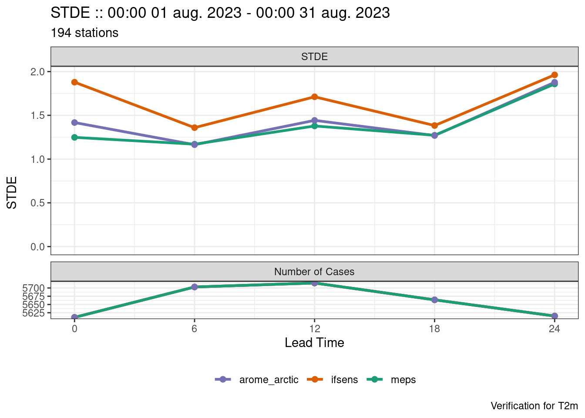
We could however plot each forecast model in a separate panel and assign, for example, threshold to control the colour.
plot_point_verif(
verif,
frequency_bias,
colour_by = threshold,
facet_by = vars(fcst_model)
)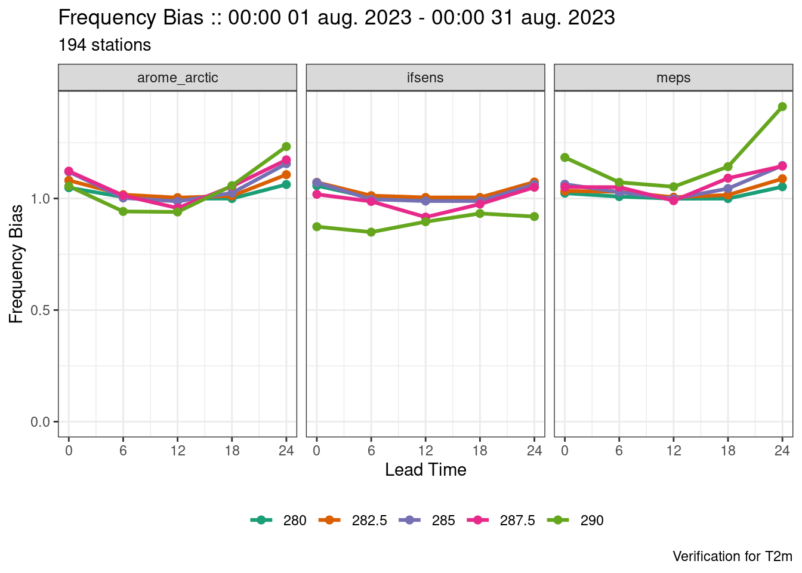
Observation errors
Gross error check
When reading observations, read_point_obs() will do a gross error check on the observations to make sure that they have realistic values. You can set the bounds with the min_obs_allowed and max_obs_allowed arguments. For some parameters, there are default values for the minimum and maximum allowed. These can be seen in the parameter definitions with get_param_def(). For example, for 2m temperature we see that the minimum and maximum values are 223 and 333 Kelvin.
get_param_def("t2m")$description
[1] "Air temperature at 2m above the ground"
$min
[1] 223
$max
[1] 333
$grib
$grib$name
[1] "2t" "t"
$grib$level_type
[1] "heightAboveGround" "surface"
$grib$level
[1] 2
$netcdf
$netcdf$name
[1] "air_temperature_2m"
$v
$v$harp_param
[1] "T2m"
$v$name
[1] "TT"
$v$param_units
[1] "K"
$v$type
[1] "SYNOP"
$wrf
$wrf$name
[1] "T2"
$fa
$fa$name
[1] "CLSTEMPERATURE "
$fa$units
[1] "K"
$obsoul
$obsoul$name
[1] 39
$obsoul$units
[1] "K"
$obsoul$harp_name
[1] "T2m"Checking observations against forecasts
Another check that can be done is to compare the values of the observations with forecasts. This is done with the check_obs_against_fcst() function. By default the data are grouped by each station ID and time of day, where the day is split into 4 parts of the day [00:00, 06:00), [06, 12:00), [12:00, 18:00) and [18:00, 00:00) and the standard deviation of the forecast for each of these is computed. The observations are then compared with the forecasts, and if the difference between the, is larger than a certain number of standard deviations then that row is removed from the data.
Using the default value of 6 standard deviations we see that no observations are removed.
fcst <- check_obs_against_fcst(fcst, T2m)ℹ Using default `num_sd_allowed = 6` for `parameter = T2m`
! 0 cases with more than 6 std devs error.If we make the check more strict to remove all cases where the observations are more than 1 standard deviation away from the forecast, we see that now 723 cases are removed. We can see the removed cases in the "removed_cases" attribute of the result.
fcst <- check_obs_against_fcst(fcst, T2m, num_sd_allowed = 1)! 723 cases with more than 1 std dev error.
ℹ Removed cases can be seen in the "removed_cases" attribute.attr(fcst, "removed_cases")# A tibble: 723 × 5
SID valid_dttm T2m dist_to_fcst tolerance
<int> <dttm> <dbl> <dbl> <dbl>
1 1001 2023-08-09 12:00:00 283. 2.94 1.21
2 1001 2023-08-10 00:00:00 282. 1.54 1.09
3 1001 2023-08-10 06:00:00 282. 1.20 1.20
4 1001 2023-08-13 00:00:00 279. 2.89 1.09
5 1001 2023-08-19 00:00:00 280. 1.17 1.09
6 1001 2023-08-21 00:00:00 282. 1.55 1.09
7 1001 2023-08-23 00:00:00 276. 2.33 1.09
8 1001 2023-08-24 00:00:00 276. 1.30 1.09
9 1001 2023-08-24 06:00:00 276. 1.66 1.20
10 1001 2023-08-30 18:00:00 280. 1.39 1.15
# ℹ 713 more rowsEnsemble rescaling
When verifying ensembles, we can take the observation error into account by attempting to rescale the distribution of the ensemble forecast to that of the observations. This is done by adding an assumed error distribution to the ensemble forecast by sampling from the error distribution and adding each random draw to an ensemble member. If the error distribution has a mean of 0, the impact will be negligible on most scores. However, for the rank histogram and ensemble spread, this will in effect take the observation errors into account. In harp we call this jittering the forecast and is done by using the jitter_fcst() function.
Take for example the rank histograms for our MEPS and IFSENS ensembles for 2m temperature.
fcst <- read_point_forecast(
dttm = seq_dttm(2023080100, 2023083112, "12h"),
fcst_model = c("meps", "ifsens"),
fcst_type = "eps",
parameter = "T2m",
file_path = fcst_dir
) |>
scale_param(-273.15, "degC") |>
common_cases()
obs <- read_point_obs(
dttm = unique_valid_dttm(fcst),
parameter = "T2m",
stations = unique_stations(fcst),
obs_path = obs_dir
) |>
scale_param(-273.15, "degC", col = T2m)
fcst <- join_to_fcst(fcst, obs)
verif <- ens_verify(fcst, T2m)
plot_point_verif(
verif,
normalized_rank_histogram,
rank_is_relative = TRUE
)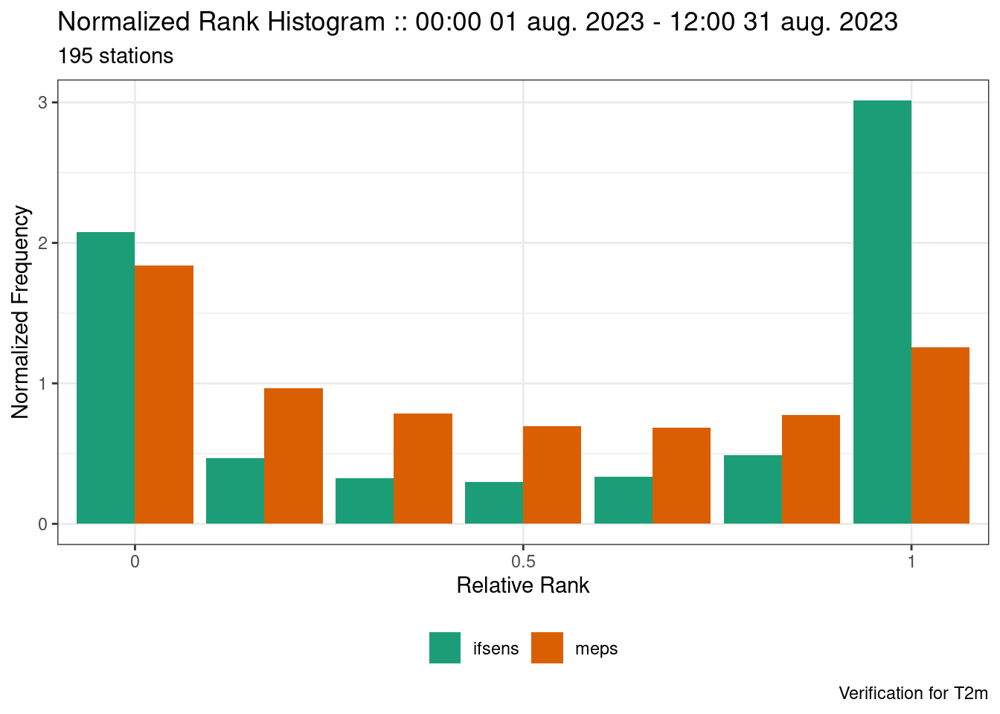
plot_point_verif(
verif,
spread_skill
)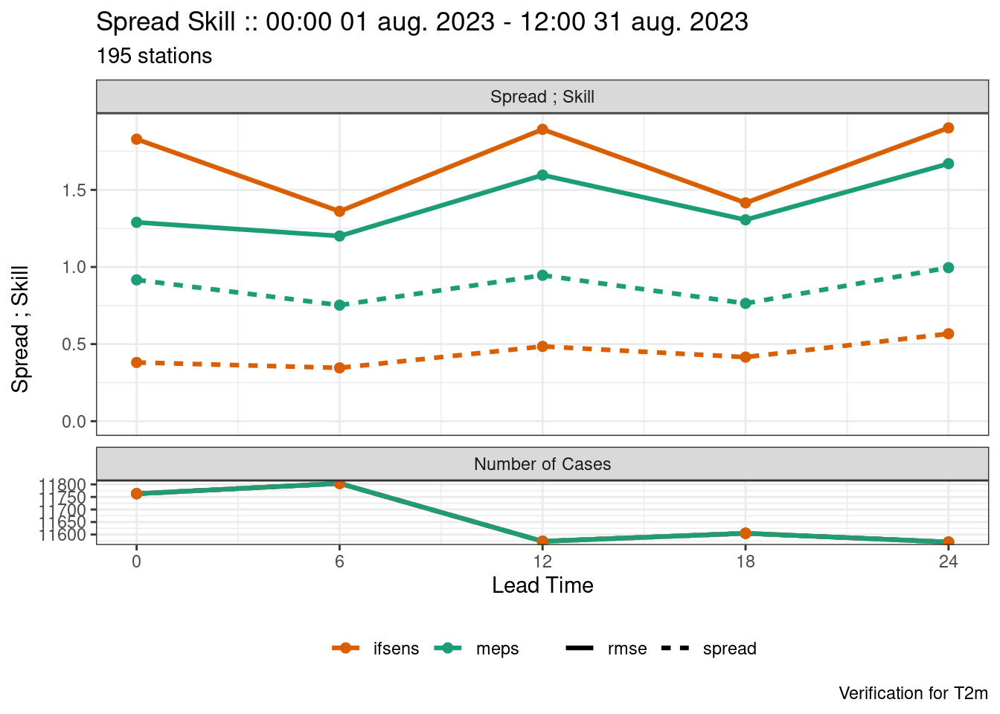
We see that both models are underdispersed with a U-shaped rank histogram. If we say that the observations have a noraml error distribution with a mean of 0 and standard deviation of 1 we can jitter the ensemble forecast by adding random draws from that distribution.
fcst <- jitter_fcst(
fcst,
function(x) x + rnorm(length(x), mean = 0, sd = 1)
)
verif <- ens_verify(fcst, T2m)
plot_point_verif(
verif,
normalized_rank_histogram,
rank_is_relative = TRUE
)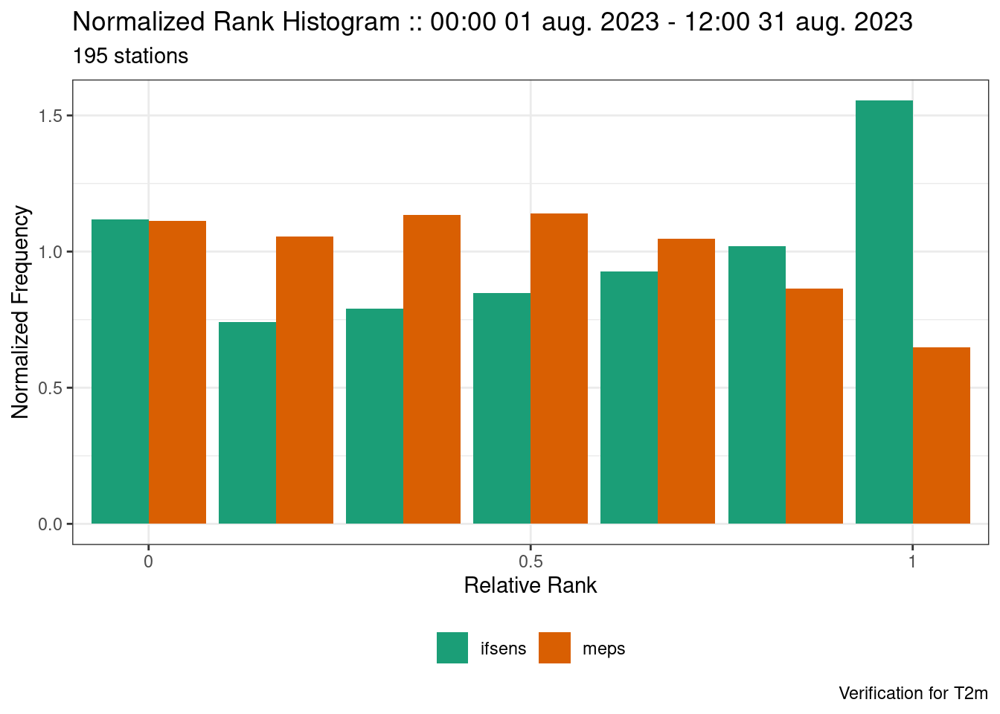
plot_point_verif(
verif,
spread_skill
)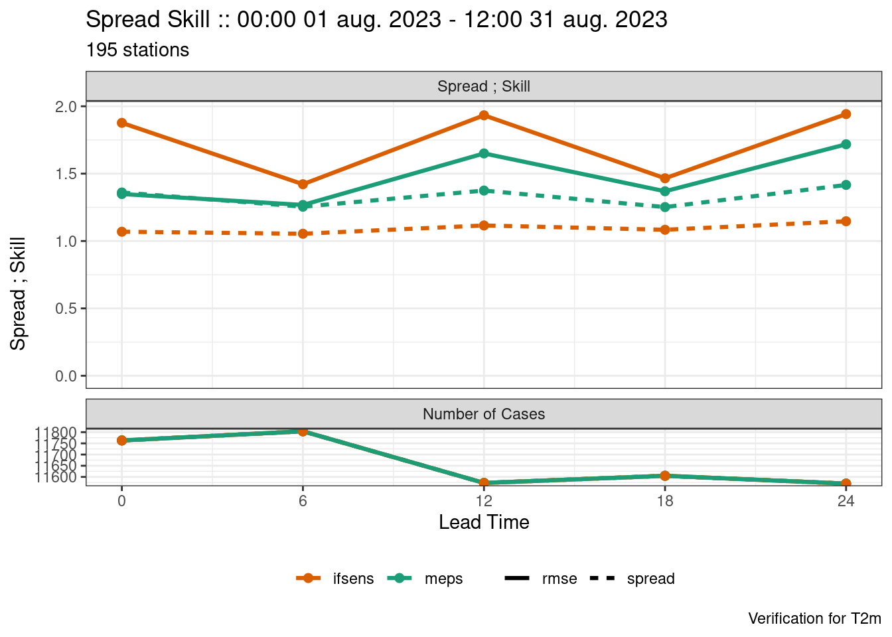
Now we see that the forecast is much less underdispersed with many of the ranks have a normalized frequency close to 1 and the ensemble spread much closer to the ensemble RMSE.
Warning: Error Distributions
harp does not include any estimates for error distributions. It is the user’s responsibility to provide those error distributions. In this example, a normal distribution with a mean of 0 and standard deviation of 1 is for illustrative purposes only.
Grouped Verification and Scaling
Basic Grouping
So far we have just done verification stratified by lead_time. We can use the groupings argument to tell the verification function how to group the data together to compute scores. The most common grouping after lead time would be to group by the forecast cycle. Rather than read in only the forecasts initialized at 00:00 UTC, we will read in the 12:00 UTC forecasts as well.
fcst <- read_point_forecast(
dttm = seq_dttm(2023080100, 2023083112, "12h"),
fcst_model = c("meps", "ifsens"),
fcst_type = "eps",
parameter = "T2m",
members = 0,
file_path = fcst_dir
) |>
as_det()
fcst$arome_arctic <- read_point_forecast(
dttm = seq_dttm(2023080100, 2023083112, "12h"),
fcst_model = "arome_arctic",
fcst_type = "det",
parameter = "T2m",
file_path = fcst_dir
)
fcst <- common_cases(fcst)The forecasts are in Kelvin, but it may be more useful to have them in °C. We can scale the data using scale_param(). At a minimum we need to give the function the scaling to apply and a new name for the units. By default the scaling is additive, but it can be made multiplicative by setting mult = TRUE.
fcst <- scale_param(fcst, -273.15, new_units = "degC")Now we can read the observations and join to the forecast.
obs <- read_point_obs(
dttm = unique_valid_dttm(fcst),
parameter = "T2m",
stations = unique_stations(fcst),
obs_path = obs_dir
)fcst <- join_to_fcst(fcst, obs)Warning: .fcst has units: degC and .join has units: KError: Join will not be done due to units incompatibility. You can force the join by setting force = TRUE
OR, units imcompatibility can be fixed with the set_units(), or scale_param() functions.Here the join fails because the forecasts and observations do not have the same units. We therefore also need to scale the observations with scale_param(). When scaling observations, the name of the observations column also needs to be provided.
obs <- scale_param(obs, -273.15, new_units = "degC", col = T2m)
fcst <- join_to_fcst(fcst, obs)Now we can verify. This time we will tell det_verify() that we want scores for each lead time and forecast cycle.
verif <- det_verify(
fcst,
T2m,
thresholds = seq(10, 20, 2.5),
groupings = c("lead_time", "fcst_cycle")
)
plot_point_verif(verif, rmse, facet_by = vars(fcst_cycle))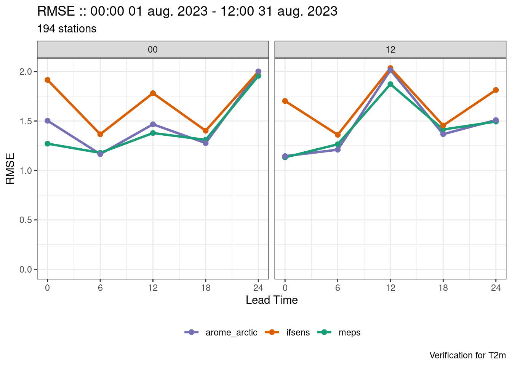
We now have plots for each forecast cycle, but what if we also want the combined forecast cycles as well? There are two ways we could tackle that - firstly we could compute the verification with groupings = "lead_time" (i.e. the default) and bind the output to what we already have with bind_point_verif().
verif <- bind_point_verif(
verif,
det_verify(fcst, T2m, thresholds = seq(10, 20, 2.5))
)
plot_point_verif(verif, rmse, facet_by = vars(fcst_cycle))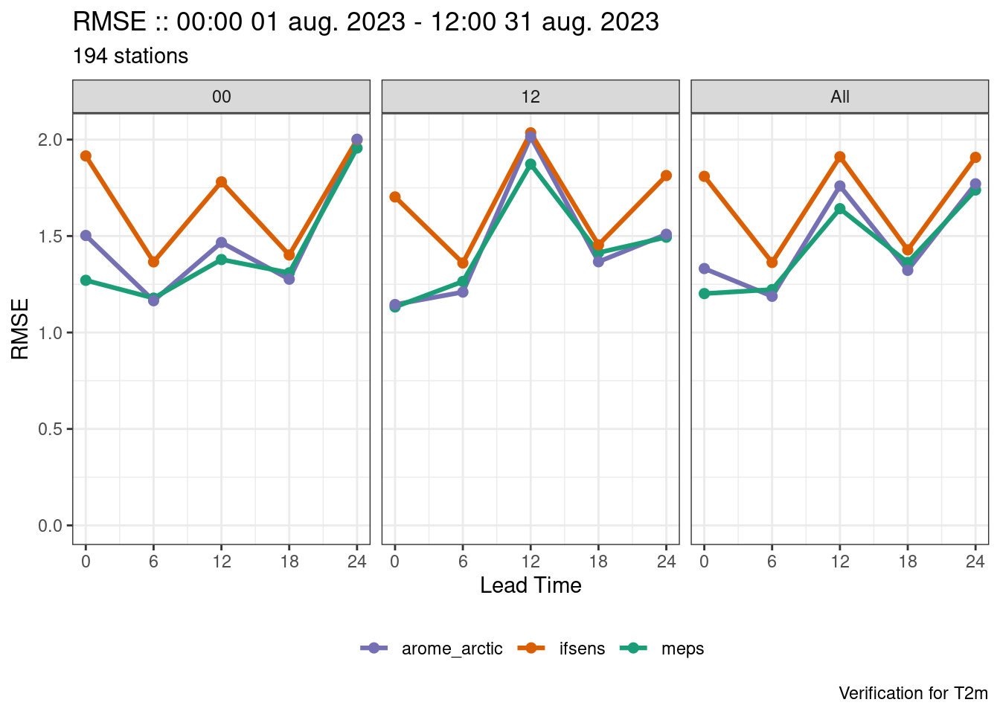
Grouping Lists
An easier way would be to pass a list to groupings. Each element in the list is treated as a separate verification and then they are bound together at the end.
verif <- det_verify(
fcst,
T2m,
thresholds = seq(10, 20, 2.5),
groupings = list(
"lead_time",
c("lead_time", "fcst_cycle")
)
)
save_point_verif(verif, here("data", "verification", "det", "fcst-cycle"))
plot_point_verif(verif, rmse, facet_by = vars(fcst_cycle))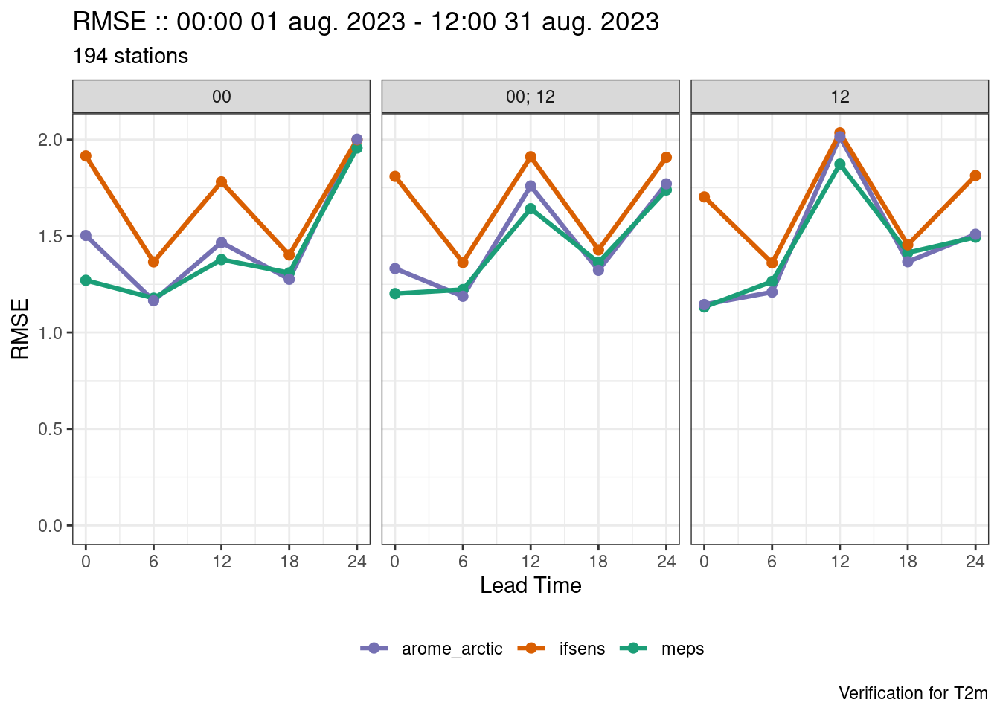
Tip: Controlling the order of facets
Facets are plotted in alphabetical order if the faceting variable is a string or coerced into a string. This means that the facets can be in an unexpected order. The fct_*() functions from the forcats package can be used to help reorder the facets. Quite often the order in which the values of the variable appear in the data is the order you want the facets to be in so fct_inorder() can be used to reorder the facets.
plot_point_verif(verif, rmse, facet_by = vars(fct_inorder(fcst_cycle)))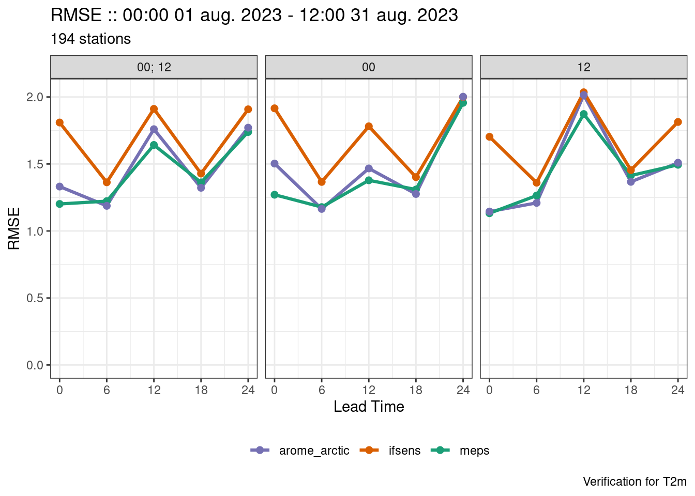
Complex Grouping Lists
Adding a station characteristic
It is often desirable to group stations together by common characteristics, whether that be location, whether it’s on the coast or in the mountains or any other characteristic. harp includes a built in data frame of station groups that can be joined to the forecast and used to group the verification. We can join the station groups using join_to_fcst() with force = TRUE since we don’t want a check on common units between the data frames to be joined together.
fcst <- join_to_fcst(fcst, station_groups, force = TRUE)This has added a "station_group" column to the forecast which we can use in the groupings argument. Now we want verification for each lead time for all forecast cycles and station groups; for each lead time and each forecast cycle for all station groups; for each lead time and each station group for all forecast cycles; and for each lead time for each station group for each forecast cycle. Therefore we need a list of 4 different groupings.
verif <- det_verify(
fcst,
T2m,
thresholds = seq(10, 20, 2.5),
groupings = list(
"lead_time",
c("lead_time", "fcst_cycle"),
c("lead_time", "station_group"),
c("lead_time", "fcst_cycle", "station_group")
)
)
save_point_verif(verif, here("data", "verification", "det", "stations"))Plotting now becomes quite complicated as you have to do a lot of filtering and faceting. For example:
plot_point_verif(
verif,
equitable_threat_score,
facet_by = vars(station_group),
filter_by = vars(grepl(";", fcst_cycle), threshold == 15)
)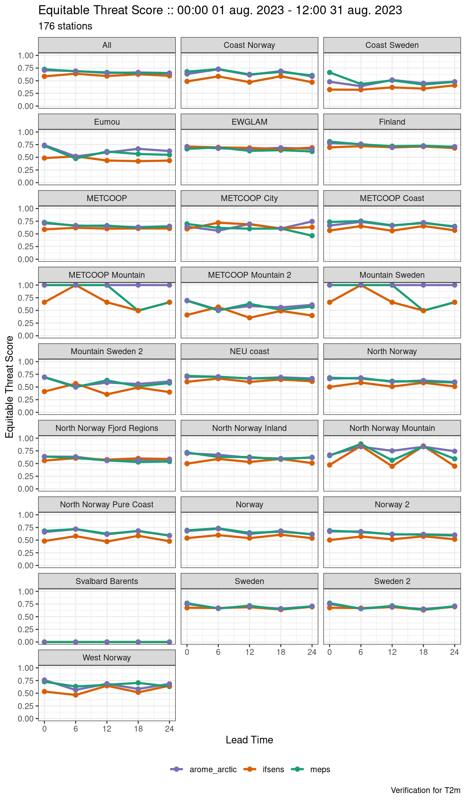
You may have noticed the saving of each verification result into specific directories. This is so that they can be plotted using an interactive app that runs in a web browser. The app is made using R Shiny so we refer to it as a Shiny app. save_point_verif() uses very specific file names that describe some of the information about the verification object, but the grouping strategy is not one of those pieces of information, hence the separate directories. The Shiny app will create dropdown menus allowing you to choose the group for which you want to see the scores.
You can start the shiny app with:
shiny_plot_point_verif(
start_dir = here("data", "verification"),
full_dir_navigation = FALSE,
theme = "light"
)
Tip: Shiny App Options
When you start the shiny app it is best to give it a directory to start from to aid navigation. By setting full_dir_navigation = FALSE the use of modal windows to navigate your directory system is disabled, and all directories below the start directory are searched for harp point verification files and the Select Verfication Directory dropdown is populated - this is experimental and may not give the smoothest ride, but is often less cumbersome than navigation by modal windows. Finally you can choose between “light”, “dark” and “white” for the colour theme of the app (the default is “dark”).
Changing the Time Axis
You can also use the groupings argument to specify different time axes to use for the verification. So far we have used the lead time for the time axis. However we could also use the time of day to get the diurnal cycle, or simply get the scores for each date-time in the data set. In this example we will still group by the forecast cycle as well. To get the time of day, we first need to run expand_date() on the data to get a column for "valid_hour".
fcst <- expand_date(fcst, valid_dttm)
verif <- det_verify(
fcst,
T2m,
thresholds = seq(10, 20, 2.5),
groupings = list(
"lead_time",
c("lead_time", "fcst_cycle"),
"valid_hour",
c("valid_hour", "fcst_cycle"),
"valid_dttm",
c("valid_dttm", "fcst_cycle")
)
)
Note: A necessary hack
Since the data are 6 hourly there are only 4 valid hours in the data set. When there are fewer than five different values in group the verification functions separate them with a “;” in the group value when they are all together, otherwise they are labelled as “All”. plot_point_verif() only searches for “All” when figuring out which data to get for each different x-axis.
We need to use mutate_list() in conjunction with case_when() from the dplyr package to modify the "valid_hour" column where all valid hours are collected together. mutate_list() use mutate() from the dplyr package to modify columns of data frames in a list whilst retaining the attributes of the list.
verif <- mutate_list(
verif,
valid_hour = case_when(
grepl(";", valid_hour) ~ "All",
.default = valid_hour
)
)
save_point_verif(verif, here("data", "verification", "det", "fcst-cycle"))We can now use the x-axis argument to plot_point_verif() to decide which times to use on the x-axis.
plot_point_verif(verif, mae, facet_by = vars(fct_inorder(fcst_cycle)))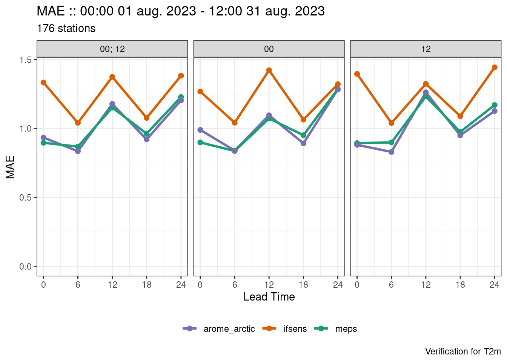
plot_point_verif(
verif,
mae,
x_axis = valid_hour,
facet_by = vars(fct_inorder(fcst_cycle))
)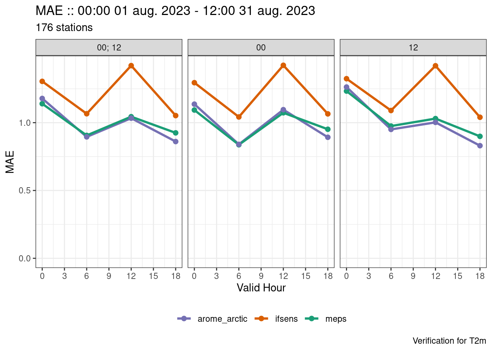
plot_point_verif(
verif,
mae,
x_axis = valid_dttm,
facet_by = vars(fct_inorder(fcst_cycle)),
point_size = 0
)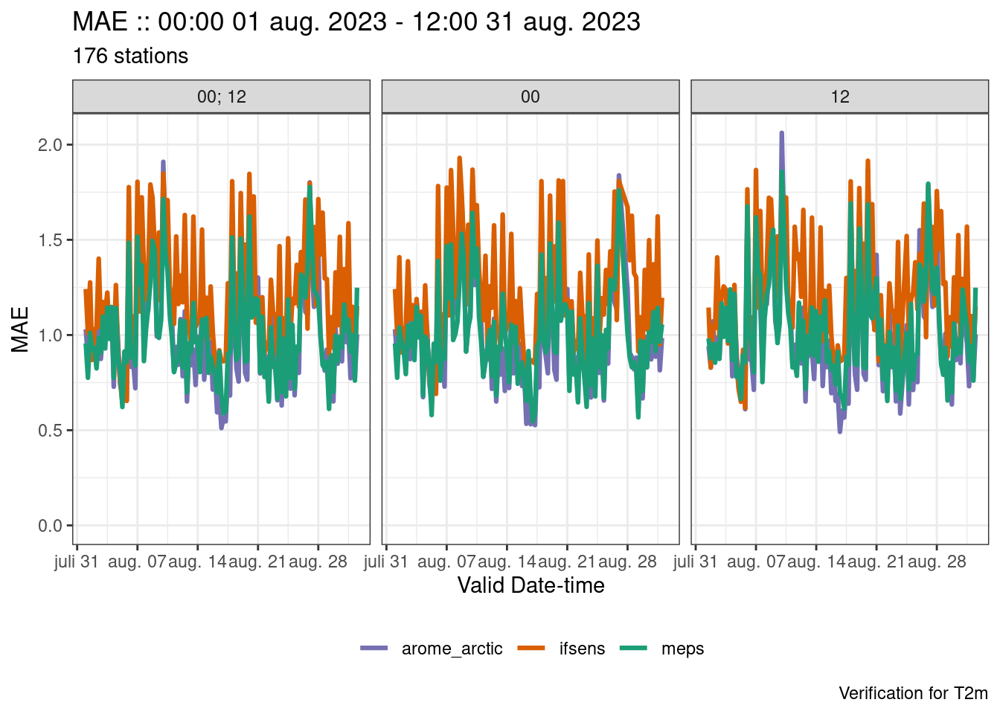
Vertical Profiles
Another application where grouping is important in the verification of vertical profiles. In general the workflow is once again the same, but there are some aspects where you need to take into account that the data are on vertical levels.
The first difference is that when reading in the data, you need to tell the read function what vertical coordinate the data are on via the vertical_coordinate argument. In most cases the data will be on pressure levels, but they could also be on height levels or model levels.
The data we are using here come from the AROME-Arctic model and the control member of MEPS, which at MET Norway is archived as MEPS_det (i.e. MEPS deterministic). There are forecasts available every 6 hours at 00-, 06-, 12- and 18-UTC.
fcst <- read_point_forecast(
dttm = seq_dttm(2023080100, 2023083118, "6h"),
fcst_model = c("meps", "arome_arctic"),
fcst_type = "det",
parameter = "T",
file_path = fcst_dir,
vertical_coordinate = "pressure"
) |>
scale_param(-273.15, "degC")When finding the common cases, the default behaviour is to compare the "fcst_dttm", "lead_time" and "SID" columns. When finding common cases for vertical profiles we also need to make sure that only the vertical levels that are common to all forecast models are included in the verification. We do this by adding the pressure column (p) to common_cases().
fcst <- common_cases(fcst, p)Similar to reading the forecasts, we also need to tell read_point_obs that the vertical coordinate is pressure.
obs <- read_point_obs(
dttm = unique_valid_dttm(fcst),
parameter = "T",
stations = unique_stations(fcst),
obs_path = obs_dir,
vertical_coordinate = "pressure"
) |>
scale_param(-273.15, "degC", col = T)Joining works exactly the same as for single level variables.
fcst <- join_to_fcst(fcst, obs)Now we can verify, making sure that we have "p" as one of the grouping variables.
verif <- det_verify(
fcst,
T,
groupings = list(
c("lead_time", "p"),
c("lead_time", "p", "fcst_cycle")
)
)
save_point_verif(
verif,
here("data", "verification", "det", "fcst-cycle")
)We can now plot the profile verification using plot_profile_verif() making sure to filter and facet appropriately (for example, there is one profile for each lead time).
plot_profile_verif(
verif,
mae,
filter_by = vars(grepl(";", fcst_cycle)),
facet_by = vars(lead_time)
)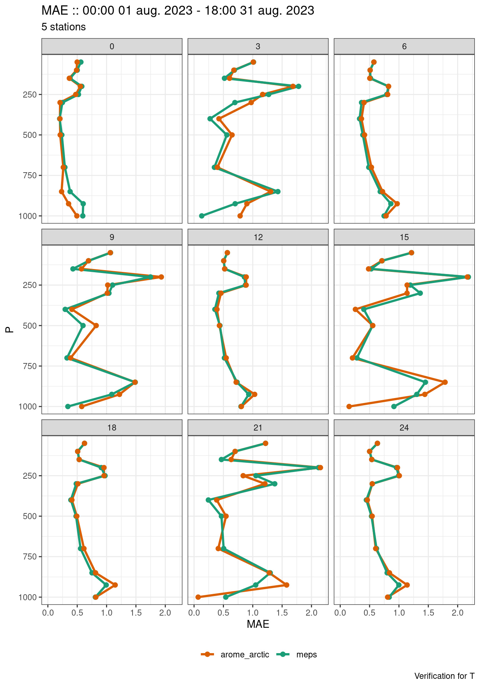
We could also make a plot for a single vertical level in the normal way. We may also want to remove times when there are very few cases.
plot_point_verif(
verif,
bias,
filter_by = vars(p == 925, num_cases > 5),
facet_by = vars(fct_inorder(fcst_cycle))
)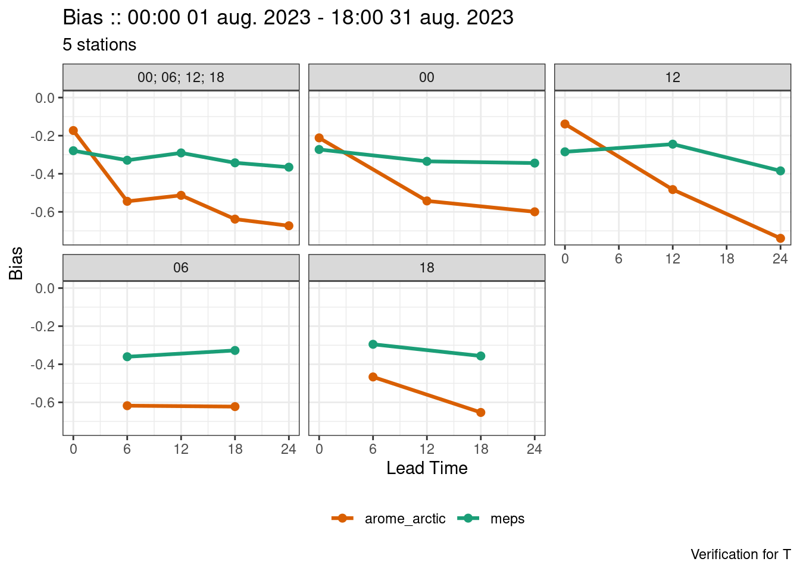
Conditional Verification
Classification by observed value
On occasion, it may be instructive to verify for particular conditions. For example, to verify temperature for different temperature ranges. This can be done by creating a grouping column for each range of observed temperature. Here the workflow would be to use mutate() from the dplyr package in association with the base R function cut() to create a grouping column on the observations before joining to the forecast.
fcst <- read_point_forecast(
dttm = seq_dttm(2023080100, 2023083100, "24h"),
fcst_model = c("meps", "ifsens"),
fcst_type = "eps",
parameter = "T2m",
file_path = fcst_dir
) |>
scale_param(-273.15, "degC") |>
common_cases()
obs <- read_point_obs(
dttm = unique_valid_dttm(fcst),
parameter = "T2m",
stations = unique_stations(fcst),
obs_path = obs_dir
) |>
scale_param(-273.15, "degC", col = T2m)We are going to classify the temperature by having the left side of each range open and right side closed. This basically means that each range goes from >= the lower value to < the upper value. We do this by setting right = FALSE in the call to cut().
obs <- mutate(
obs,
temp_range = cut(T2m, seq(5, 25, 2.5), right = FALSE)
)
obs# A tibble: 23,756 × 8
valid_dttm SID lon lat elev units T2m temp_range
<dttm> <int> <dbl> <dbl> <dbl> <chr> <dbl> <fct>
1 2023-08-01 00:00:00 1001 -8.67 70.9 10 degC 6.75 [5,7.5)
2 2023-08-01 00:00:00 1010 16.1 69.3 13 degC 14.4 [12.5,15)
3 2023-08-01 00:00:00 1015 17.8 69.6 33 degC 18.6 [17.5,20)
4 2023-08-01 00:00:00 1023 18.5 69.1 77 degC 13.1 [12.5,15)
5 2023-08-01 00:00:00 1025 18.9 69.7 9 degC 13.0 [12.5,15)
6 2023-08-01 00:00:00 1026 18.9 69.7 115 degC 14.2 [12.5,15)
7 2023-08-01 00:00:00 1027 18.9 69.7 20 degC 13.0 [12.5,15)
8 2023-08-01 00:00:00 1028 19.0 74.5 16 degC 4.55 <NA>
9 2023-08-01 00:00:00 1033 19.5 70.2 24 degC 14.5 [12.5,15)
10 2023-08-01 00:00:00 1035 20.1 69.6 710 degC 12.9 [12.5,15)
# ℹ 23,746 more rowsYou will see that cut() labels values outside of the breaks as NA. This isn’t necessarily meaningful, so we will use the dplyr function case_when() to give more meaningful labels. We will also take the opportunity to format the other ranges a bit better.
obs <- mutate(
obs,
temp_range = case_when(
T2m < 5 ~ "< 5",
T2m >= 25 ~ ">= 25",
.default = gsub(",", ", ", temp_range)
),
temp_range = fct_relevel(
temp_range,
c(
"< 5",
gsub(
",",
", ",
levels(cut(seq(5, 25), seq(5, 25, 2.5), right = FALSE))
),
">= 25"
)
)
)In the above we also set the factor levels to an order that makes sense for when we come to plot the scores. We can now continue as normal, adding “temp_range" as a grouping variable.
fcst <- join_to_fcst(fcst, obs)
verif <- ens_verify(
fcst,
T2m,
groupings = c("leadtime", "temp_range")
)
plot_point_verif(
verif,
spread_skill,
facet_by = vars(temp_range)
)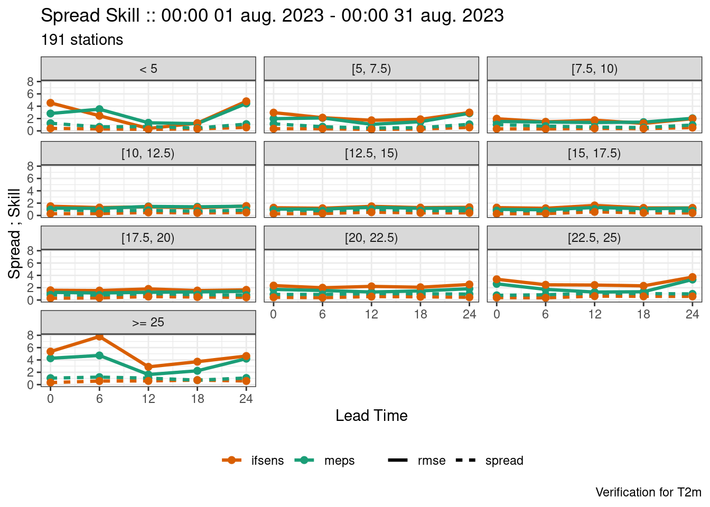
Classification by a different parameter
One important aspect of forecast model performance is how it performs in different weather regimes. For example, it may be useful to know how the model performs for a particular parameter when the wind is coming from a certain direction. There are a couple of approaches to this, but it must be noted that it is important to include the possibility for false alarms in the verification.
Here we will compute the verification scores for an ensemble forecast for 2m temperature when the wind is coming from the west, so let’s say a wind direction between 45° and 135°. We will first read in the wind direction observations for the cases we already have for 2m temperature.
wind_dir <- read_point_obs(
dttm = unique_valid_dttm(fcst),
parameter = "D10m",
stations = unique_stations(fcst),
obs_path = obs_dir
)We will now create a column to have the groups “westerly” and “other” based on the values in the "D10m" column.
wind_dir <- mutate(
wind_dir,
wind_direction = case_when(
between(D10m, 45, 135) ~ "westerly",
.default = "other"
)
)We can now join the wind direction data to the 2m temperature data that we want to verify. Here we have to set force = TRUE in join_to_fcst() since it will fail the check for the forecasts and observations having the same units.
fcst <- join_to_fcst(fcst, wind_dir, force = TRUE)We can now verify 2m temperature and group by the wind direction.
verif <- ens_verify(
fcst,
T2m,
groupings = c("lead_time", "wind_direction")
)::Computing verification for fcst_model `meps`::Det summary for sub_model, member, lead_time & wind_direction✔Hexbin for sub_model, member, lead_time & wind_direction✔Spread; Skill for lead_time & wind_direction✔
Hexbin for lead_time & wind_direction✔
Rank histogram for lead_time & wind_direction✔
CRPS for lead_time & wind_direction✔
::Computing verification for fcst_model `ifsens`::
Det summary for sub_model, member, lead_time & wind_direction✔
Hexbin for sub_model, member, lead_time & wind_direction✔
Spread; Skill for lead_time & wind_direction✔
Hexbin for lead_time & wind_direction✔
Rank histogram for lead_time & wind_direction✔
CRPS for lead_time & wind_direction✔plot_point_verif(
verif,
mean_bias,
facet_by = vars(wind_direction)
)Warning: plot_num_cases = TRUE cannot be used with facet_by. plot_num_cases set
to FALSE.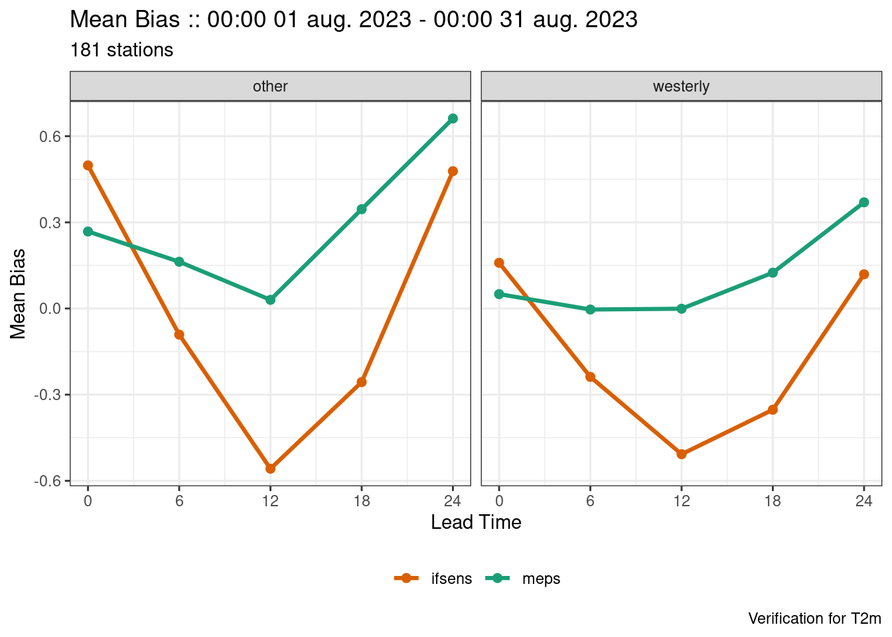
A more thorough method might be to include whether westerly winds were forecast or not in the analysis, such that we have cases of westerly being observed only, forecasted only, both observed and forecasted, and neither observed nor forecasted.
So now we need read in the wind direction forecasts as well. In this case we need to set the units to “degrees” as they are incorrect in the file (due to a bug :/ ).
fcst_wind_dir <- read_point_forecast(
dttm = unique_fcst_dttm(fcst),
fcst_model = c("meps", "ifsens"),
fcst_type = "eps",
parameter = "wd10m",
lead_time = unique_col(fcst, lead_time),
stations = unique_stations(fcst),
file_path = fcst_dir
) |>
set_units("degrees")Since the forecasts are from ensemble, we could identify forecasts that have westerly winds as those where at least one member has a wind direction between 45° and and 135° To identify these cases we can find the binary probability for each member and then compute the ensemble mean with ens_stats(). We can apply a function to multiple columns using across() from the dplyr package together with mutate(). Since we are generating logical values, we need to tell ens_stats() not to compute the standard deviation.
fcst_wind_dir <- mutate(
fcst_wind_dir,
across(contains("_mbr"), ~between(.x, 45, 135))
) |>
ens_stats(sd = FALSE)Now we can join the wind direction observations, generate our groups and select only those columns we need.
fcst_wind_dir <- join_to_fcst(fcst_wind_dir, wind_dir)
fcst_wind_dir <- mutate(
fcst_wind_dir,
westerly = case_when(
ens_mean > 0 & wind_direction == "westerly" ~ "both",
ens_mean > 0 & wind_direction == "other" ~ "forecast only",
ens_mean == 0 & wind_direction == "westerly" ~ "observed only",
ens_mean == 0 & wind_direction == "other" ~ "neither",
.default = NA
)
) |>
select(fcst_dttm, lead_time, SID, westerly)We can now join our data frame with the verification groups to the 2m temperature forecasts to be verified. Since we have two models, we can merge them into a single data frame using bind().
fcst <- join_to_fcst(
fcst,
bind(fcst_wind_dir),
force = TRUE
)Now we can verify and plot for our new groups.
verif <- ens_verify(
fcst,
T2m,
groupings = c("lead_time", "westerly")
)
plot_point_verif(
verif,
mean_bias,
facet_by = vars(fct_relevel(westerly, ~.x[c(2, 4, 1, 3)])),
num_facet_cols = 2
)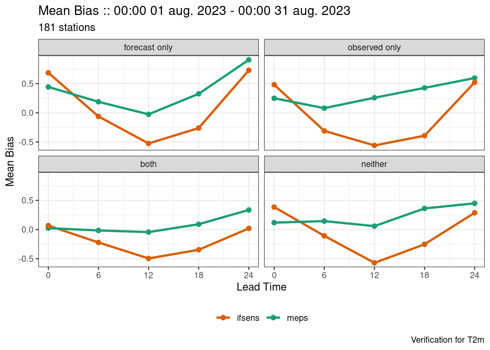
In the next tutorial will put everything you have learned here into practice by building a script that could be used for repeated verification tasks.